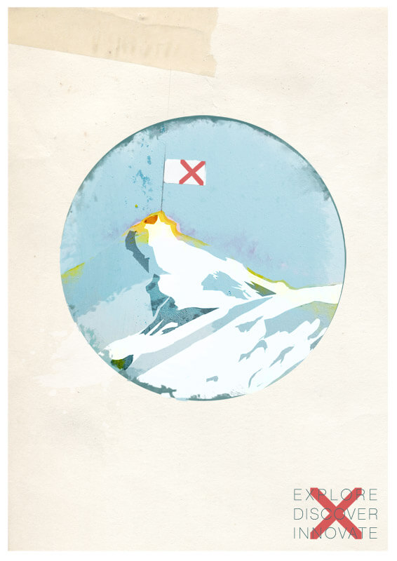
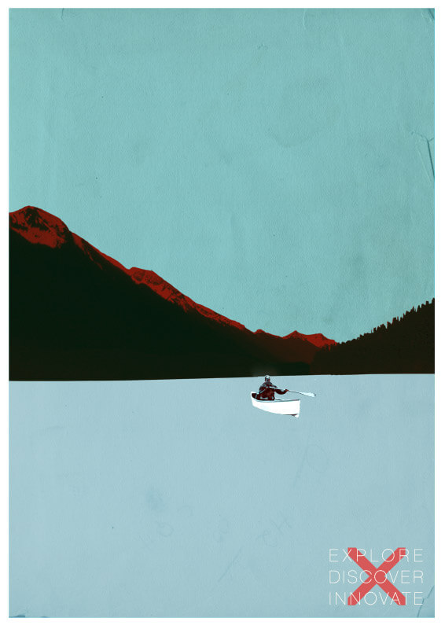
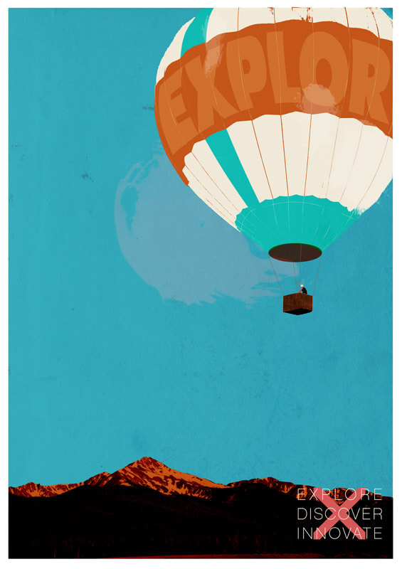
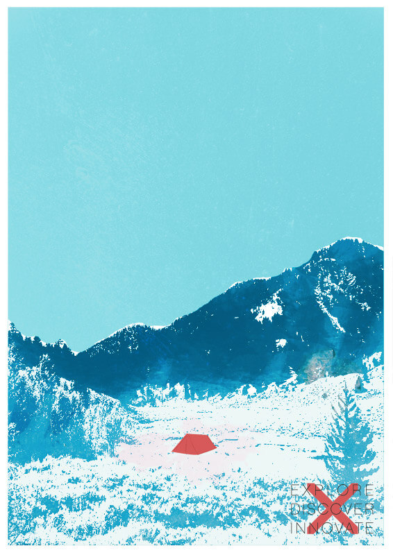
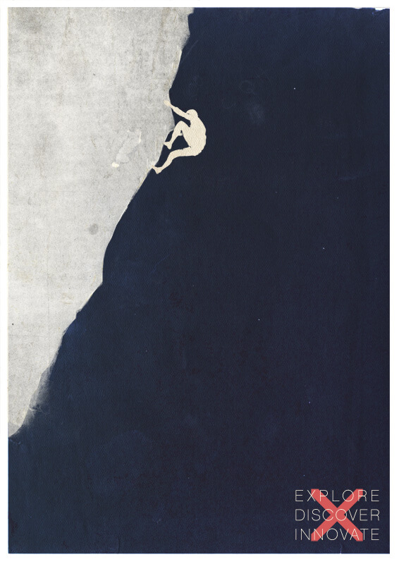
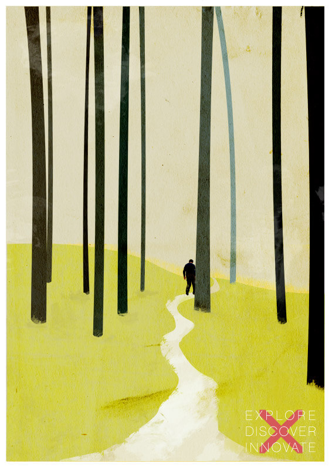
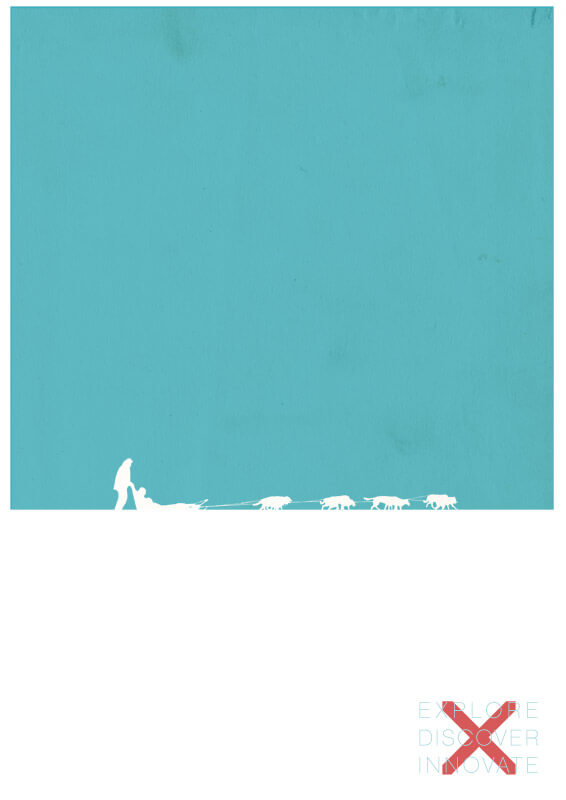
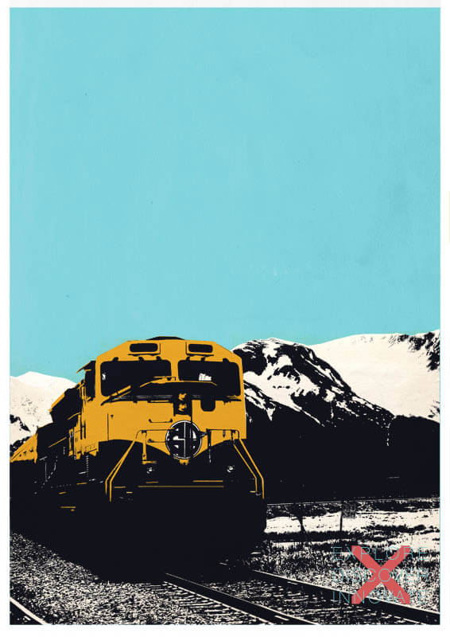

Explore
Discover
Innovate
A series of prints on the theme of exploration, made as a change from my usual web and UX work. The aim was to remember the enduring motivation humans have had for exploring our environment. From this spirit of exploration we have made discoveries and been forced to innovate to reach our goals. The prints give a nod to the sublime, with expansive landscapes still untamed by civilisation.
All the works show some trace of the explorer, but their story is never explicitly told. You don’t know where they are on their journey, what their motivations have been or if it has been successful. The viewer can place themselves into the scene and build their own story.
Making the series became the basis of a talk on the creative process at the Digpen conference in 2014. Read the write-up, Stop Hallucinating, on Medium.
Shown in the order they were completed.
-

The Mountain -

By Canoe -

The Balloon -

Set Camp -

Climbing On -

The Walk -

By Sled -

Train